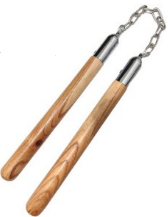

XXIII Campeonato Estadual de Kung Fu
da Super Liga Acreana de Kung Fu
Dia 02 de novembro de 2025
Centro de Iniciação Esportiva de Rio Branco – CIE
REGULAMENTO
Só imprime o regulamento
1.1 Tempo de prática dos competidores
- Iniciante: até 2 anos de prática
- Avançado: mais de 2 anos de prática
1.2 Categorias e divisão de idade
- Infantil: 4 a 12 anos
- Infanto-Juvenil: 13-15 anos
- Juvenil: 16-17 anos
- Adulto: 18-40 anos
- Sênior: +40 anos
TAOLUS TRADICIONAIS DE MÃOS LIVRES
Atenção: A fim de receber a melhor pontuação possível, a forma (Taolu) deve ser demonstrada sem interrupção, com força e foco (concentração), tanto para mãos livres como para armas. O uniforme do competidor também será levado em conta. A organização do evento se reserva ao direito de combinar ou separar categorias, se necessário.
Mãos do Sul
- Cailifoquan - ChoyLayFut;
- Hongjiaquan - HungGar;
- Dishuquan, Wuzuquan;
- YongChunQuan - WingChun.
Taolu estilo do norte:
ChaQuan, Huaquan, EmeiQuan, HongQuan, FanziQuan, Paoquan, Piguaquan, Shaolinquan - Shaolin do Norte, TangLangQuan - louva a deus, YingZhaoQuan - garra de águia, TongBeiQuan, WudangQuan.
TAOLUS TRADICIONAIS COM ARMAS
AVISO IMPORTANTE: É vedado competir com a mesma rotina em Taolu Esportivo e Taolu Tradicional.
Arma Curta
Arma cuja o comprimento **não excede o comprimento do chão ao ombro** do competidor.
DAO: FACÃO
JIAN: ESPADA RETA
Outras Armas Curtas:
SHAN: LEQUE
BISHOU: PUNHAL
CHANGDI: FLAUTA
Arma Longa
Arma cuja o comprimento **excede o comprimento do chão ao ombro** do competidor.
Categorias Principais:
GIANG: LANÇA
GUN: BASTÃO
Categorias Específicas (Pudao/Guandao):
PUDAO
GUANDAO
Outras Armas Longas:
SHUANG YUE: PAR E LUA
SANCHA JI: TRIDENTE
Miaodao: Facão de punho longo
Armas Duplas e Maleáveis
Facão Duplo (Shuangdao):
Arma dupla tradicional (masculino e feminino).
Parte 1
Parte 2
Armas Maleáveis e Duplas:
-

Shuangjiegun (Nunchaku) em outras armas maleáveis.
- Shuang Shuangjiegun (Nunchaku Duplo) em outras armas duplas.
CRITÉRIOS DE NOTAS
- Iniciante: 6,00 a 8,00;
- Avançado: 8,00 a 10,00.
CRITÉRIOS DE DESEMPATE DOS TAOLUS
- Havendo 5 árbitros a nota mais alta e a mais baixa serão desconsideradas sendo então feita a média das três restantes;
- Havendo 3 árbitros será considerada apenas a média aritmética entre as três notas;
- No caso do primeiro empate, havendo 5 árbitros será considerada a média aritmética entre as 5 notas;
- No caso do primeiro empate, havendo 3 árbitros, será considerada a média aritmética entre as 2 notas mais altas;
- No caso do segundo empate, havendo 3 ou 5 árbitros, as duas maiores notas serão somadas;
- No caso do terceiro empate, havendo 3 ou 5 árbitros, o atleta deverá repetir a mesma forma;
- Persistindo o empate, havendo 3 ou 5 árbitros, considera-se o atleta com maior número de inscrições no evento.
CRITÉRIOS PARA AVALIAÇÃO DOS TAOLUS
- Velocidade;
- Equilíbrio;
- Concentração;
- Dificuldade;
- Esquecimento;
- Falha (arma quebrar, cair, bater no chão etc.);
- Olhar, a direção correta dos olhares;
- Os atletas deverão entrar na área de competição pelo lado direito da mesa examinadora e sair pelo lado esquerdo.
PONTOS PERDIDOS NA EXECUÇÃO DOS TAOLUS
- Entrar pelo lado errado na área de competição: menos 0,04 pontos na média final;
- Postura dos pés e pernas executada inadequadamente: menos 0,02 pontos na média final;
- Perda momentânea de equilíbrio: menos 0,03 pontos na média final;
- Perda de equilíbrio e/ou queda ao chão incluindo tocar o chão com as mãos: menos 0,06 pontos na média final;
- Pausa momentânea involuntária (esquecimento): menos 0,02 pontos na média final;
- Se a arma tocar o chão ou o corpo do atleta acidentalmente: menos 0,05 pontos na média final;
- Deformação de armas: perda de 0,03 pontos na média final;
- Quebrar a arma ou deixar cair no chão: perda de 0,05 pontos na média final;
- Começar ou terminar o Taolu virado de costas para a mesa central de arbitragem: menos 0,06 pontos na média final;
- Erro: no caso do atleta errar a forma ele será automaticamente desclassificado, não tendo direito a uma nova tentativa.
2.1 Categorias de idade
- Infantil - data de nascimento de 1º de janeiro de 2014 a 31 de dezembro de 2016
- Infanto Juvenil - data de nascimento de 1º de janeiro de 2011 a 31 de dezembro de 2013
- Juvenil - data de nascimento de 1º de janeiro de 2008 a 31 de dezembro de 2010
- Adulto - data de nascimento de 1º de janeiro de 1985 a 31 de dezembro de 2007
2.2 Categorias de Peso
Feminino
Adulto Feminino
- 48kg
- 52kg
- 56kg
- 60kg
- 65kg
- 70kg
- 75kg
Juvenil Feminino
- 48kg
- 52kg
- 56kg
- 60kg
Infanto Juvenil Feminino
- 39kg
- 42kg
- 45kg
- 48kg
Infantil Feminino
- 30kg*
- 32kg
- 34kg
- 36kg
- 39kg
Masculino
Adulto Masculino
- 48kg
- 52kg
- 56kg
- 60kg
- 65kg
- 70kg
- 75kg
- 80kg
- 85kg
- 90kg
- 100kg
- +100kg
Juvenil Masculino
- 48kg
- 52kg
- 56kg
- 60kg
- 65kg
- 70kg
- 75kg
- 80kg
- 85kg
Infanto Juvenil Masculino
- 39kg
- 42kg
- 45kg
- 48kg
- 52kg
- 56kg
- 60kg
Infantil Masculino
- 30kg*
- 32kg
- 34kg
- 36kg
- 39kg
- 42kg
- 45kg
2.3 Equipamentos Obrigatórios
- Durante a luta, o competidor deverá usar luva de boxe, capacete, protetor de tórax, protetor de boca e protetor genital.
- Cada atleta deverá ter seus equipamentos pessoais de proteção obrigatória (protetor bucal, protetor genital, bandagens).
- Luvas Apropriadas: Atletas das categorias com pesos acima de 70kg utilizam luvas de 10 oz. As demais categorias de peso usarão luvas de 8 oz.
- Para a categoria Infantil, será utilizado capacete fechado (com grades) e protetores para canela e peito do pé.
- Caso o atleta prefira utilizar equipamento próprio, isto somente será permitido se for aprovado pelo Comitê Técnico do Evento. Todos os equipamentos obrigatórios serão fornecidos pela organização do evento.
Observações: As cores dos equipamentos (luva, capacete e protetor de tórax) deverão ser vermelho ou azul, de acordo com a definição das chaves de luta do evento. O uniforme e o equipamento serão inspecionados antes do atleta entrar na área de competição.
2.4 Critérios de Pontuação
Ganho de Pontos:
-
2 pontos serão concedidos quando:
- O oponente sair da plataforma pela primeira vez em um round.
- O oponente cair, enquanto quem projetou permanecer em pé (Queda Técnica).
- Atacar o oponente com chute no tronco.
- Atacar o oponente com chute na cabeça (categoria adulta).
- Fazer o oponente cair com uma "queda de sacrifício" e o atacante levantar imediatamente.
- O árbitro abrir contagem (count) para o oponente.
- O oponente receber uma falta pessoal (cartão vermelho).
-
1 ponto será concedido quando:
- Golpear o oponente em qualquer parte válida com técnica de mão (Golpe válido no corpo).
- Golpear a cabeça do oponente com técnica de mão (Golpe válido na cabeça).
- Atacar a coxa do oponente com técnica de perna.
- O oponente sair da plataforma (Queda fora do ringue).
- Ambos os competidores caírem, mas o oponente cair primeiro.
- Fazer o oponente cair com uma "queda de sacrifício" e permanecer caído.
- O oponente cair propositalmente com intenção de ataque e permanecer caído por mais de 3 segundos.
- O oponente mostrar passividade por 5 segundos após o árbitro ordenar o ataque.
- O oponente receber uma falta técnica (cartão amarelo).
Perda de Pontos:
- -1 ponto será atribuído a um competidor que receber um aviso do árbitro (devido a uma falta técnica ou pessoal).
Situações sem Pontuação:
- Nenhuma técnica clara ou bem definida é executada durante a luta.
- Ambos os competidores caem ou saem da plataforma ao mesmo tempo.
- Um competidor cai no chão com intenção de ataque e se levanta dentro de 3 segundos.
- Atacar o adversário quando estiver sendo agarrado.
2.4.1 Faltas e Punições
Faltas Técnicas:
- a) Segurar o oponente passivamente.
- b) Pedir tempo quando estiver em situação de desvantagem.
- c) Atrasar a luta de propósito.
- d) Conduta anti-esportiva ou desobediência às decisões do árbitro.
- e) Entrar na plataforma sem protetor de boca, cuspi-lo ou perder algum equipamento de proteção durante a luta.
- f) Violar a ética e o protocolo na competição.
Faltas Pessoais:
- a) Atacar o oponente antes do comando “kaishi” (iniciar) ou após “ting” (parar).
- b) Golpear o oponente em partes proibidas.
- c) Golpear o oponente usando qualquer método proibido.
Punições:
- a) Cartão amarelo para faltas técnicas.
- b) Cartão vermelho para faltas pessoais.
- c) O competidor que receber três faltas pessoais será desqualificado do combate.
- d) O competidor que ferir intencionalmente seu oponente usando métodos proibidos será desqualificado da competição e seus resultados serão cancelados.
- e) O competidor que for pego com uso de doping ou inalando oxigênio durante o intervalo será desqualificado de toda a competição e seus resultados serão cancelados.
2.4.2 Vencedor ou perdedor da luta
- a) O competidor que ganhar primeiro, dois rounds, em uma luta será o vencedor.
- b) O competidor vencerá a luta se seu oponente for lesionado ou não estiver apto a continuar por decisão médica.
- c) Se durante a luta o competidor fingir ter sido lesionado por ações faltosas, o adversário será proclamado vencedor da luta depois do caso ter sido analisado pela equipe médica.
- d) Se durante a luta um dos lados for lesionado por ações faltosas de seu adversário e não estiver em condições de continuar na luta, por ordens médicas, o lesionado será o vencedor da luta, mas não poderá participar da próxima luta.
2.4.3 Se os dois competidores obtiverem o mesmo número de rounds ganhos
O vencedor será proclamado pelo seguinte critério:
- a) O que recebeu menor número de cartões vermelhos (faltas pessoais) na luta será o vencedor da luta.
- b) O que recebeu menor número de cartões amarelos (faltas técnicas) na luta será o vencedor da luta.
- c) O que for mais leve (segundo pesagem oficial) será o vencedor da luta.
- d) Se mesmo seguindo os critérios acima permanecer igual, será realizado o quarto round.
2.5 Pesagem
- O competidor deverá apresentar-se com a carteira de Identidade para a pesagem.
- A pesagem será feita pelo registrador chefe juntamente com seu grupo e deverá ter a supervisão do chefe de arbitragem.
- O Competidor deverá estar com trajes adequados para a pesagem.
Masculino: calção ou sunga.
Feminino: biquíni completo ou bermuda e top. - A pesagem começará pelas categorias mais leves.
2.6 Sorteio
- O sorteio será realizado após a pesagem e se iniciará pelas categorias mais leves. Se algum competidor for o único inscrito em sua categoria.
- O sorteio será feito pelo grupo de registro e será realizado em local e hora pré-determinados com a presença ou não dos técnicos e/ou chefes de delegações.
- Quando os competidores forem apresentados, os mesmo deverão cumprimentar o público, na forma tradicional, "palma e punho".
- Antes do início de cada round os competidores deverão se cumprimentar.
- Quando o resultado da luta estiver sendo anunciado, os competidores trocarão suas posições. Depois de anunciado o resultado da luta eles deverão se cumprimentar, cumprimentar o árbitro central que retribuirá o cumprimento e então deverão cumprimentar o técnico adversário que também retribuirá o cumprimento.
- O competidor que for incapaz de continuar a luta devido a lesões será considerado desistente. Ele não estará apto a continuar na competição, contudo suas colocações nas disputas anteriores serão respeitadas.
- No caso de grande disparidade técnica entre os lutadores, por segurança o técnico pode mostrar o sinal de desistência ou sinalizar com a placa apropriada de desistência que ficará no corner ou o próprio lutador pode levantar o braço para sinalizar desistência.
- O competidor que ficou ausente na pesagem ou não apresentar-se após ter seu nome anunciado por três vezes antes da luta ou sair sem permissão e não retornar a área em tempo será considerado desistente, sem justificação.
- O competidor que sair ou se ausentar sem se justificar será privado dos resultados obtidos nas lutas anteriores.
Parte traseira do crânio, toda região do pescoço, genital e ataques que vão contra as articulações.
Cabeça, tronco e as coxas.
- Atacar o oponente com o uso da cabeça, cotovelo, joelho ou golpes contra as articulações.
- Não são permitidos os golpes de projeções que lancem o oponente com a cabeça contra o solo. Não é permitido pressionar ou esmagar o oponente propositalmente na finalização da queda contra o solo.
- Atacar, com qualquer técnica, a cabeça do oponente caído no solo.
Local: Centro de Iniciação Esportiva de Rio Branco – CIE
Data: 02 de novembro de 2025
Horário: 08:00 às 18:00 horas
Inscrições: Até 25 de outubro de 2025
Documentação necessária: RG ou certidão de nascimento, atestado médico recente